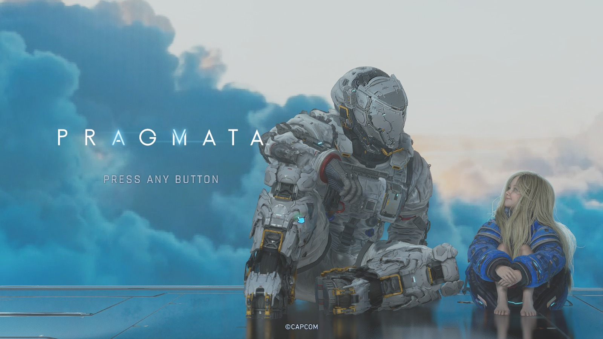
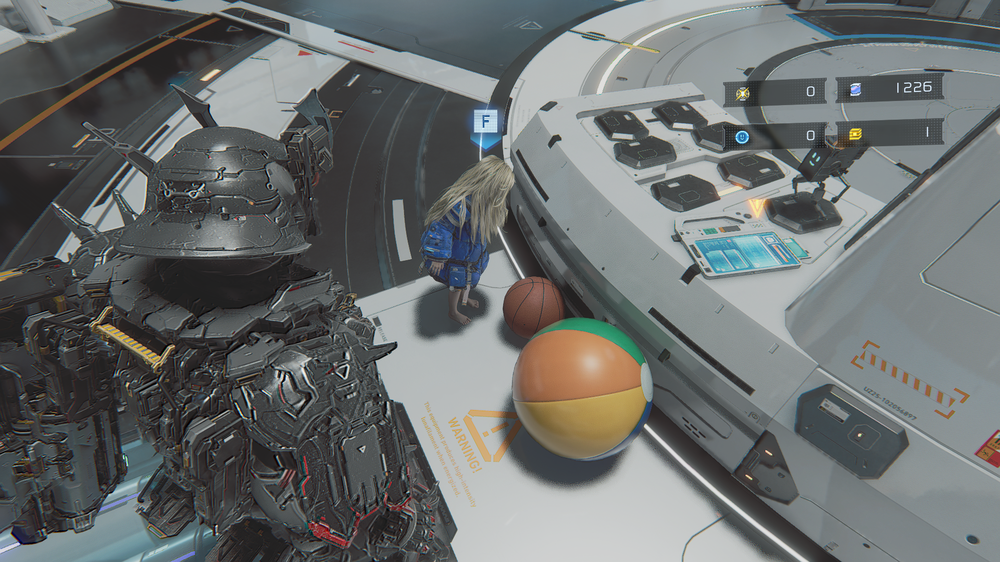
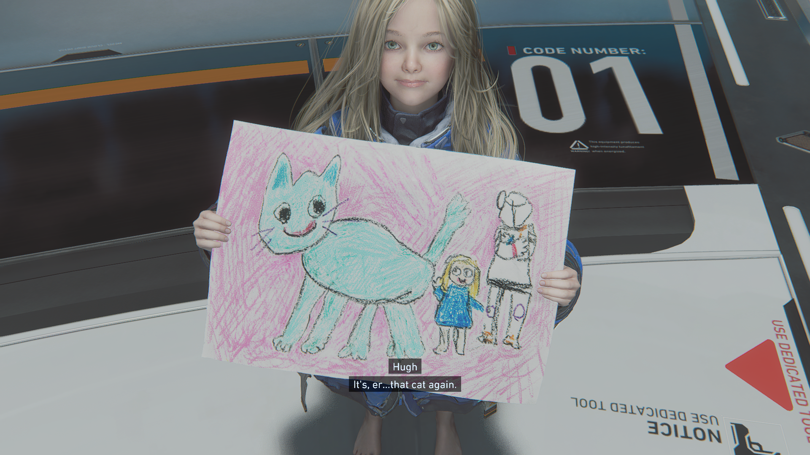
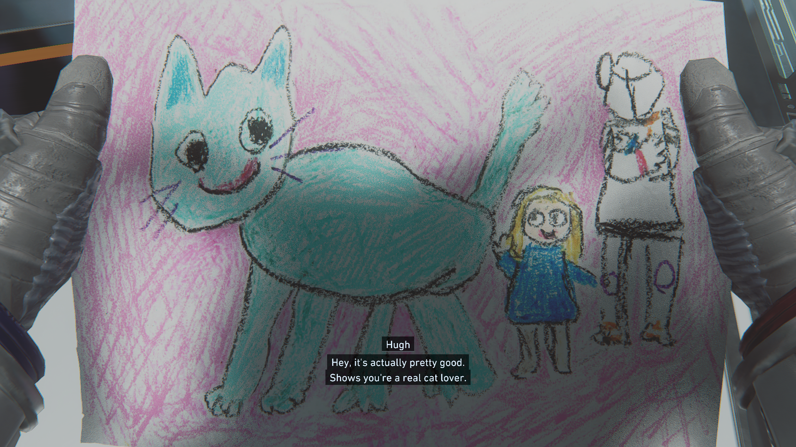
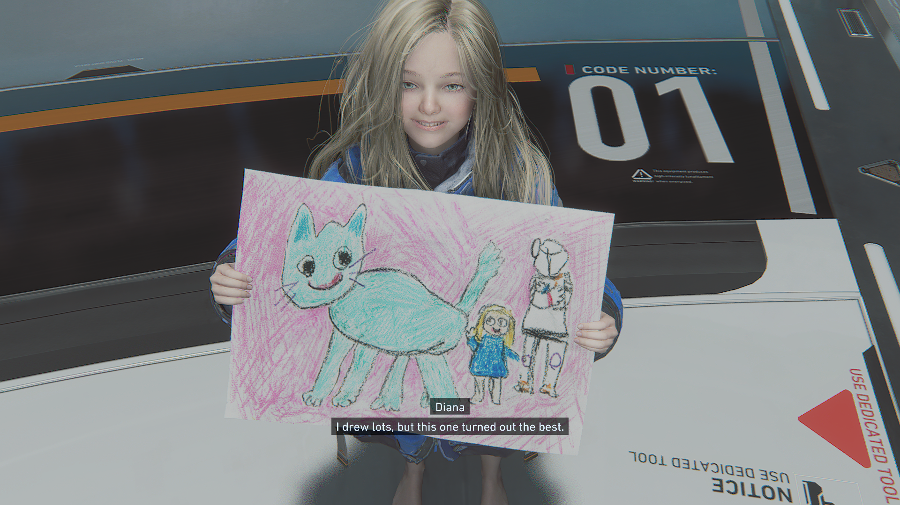

PRAGMATA
Misteri bulan, hubungan antara manusia dan android, serta ekspektasi terhadap petualangan fiksi ilmiah terbaru dari Capcom.

Sebagai IP (Intellectual Property) orisinal dari Capcom, PRAGMATA menarik perhatian melalui perpaduan latar fiksi ilmiah, fasilitas penelitian di bulan, dan hubungan antara seorang astronot dengan Diana, seorang android yang menemaninya. Materi promosi pra-rilisnya membangun rasa penasaran tentang dunia yang tidak sepenuhnya dapat dipercaya dan teknologi yang menjadi bagian penting dari petualangan mereka.
01. Presentasi dan Desain Naratif

Salah satu daya tarik awal PRAGMATA adalah kontras antara Hugh, seorang astronot dengan perlengkapan berteknologi tinggi, dan Diana, android muda yang memiliki peran penting dalam perjalanan mereka. Perbedaan karakter ini membuka peluang bagi cerita yang tidak hanya berpusat pada teknologi dan ancaman, tetapi juga pada hubungan antarkarakter.
Latar fasilitas penelitian di bulan memberi ruang bagi misteri tentang apa yang sebenarnya terjadi di sana. Berbagai visual yang tidak biasa, termasuk representasi objek yang terasa surealis, memunculkan pertanyaan mengenai keadaan dunia serta hubungan antara teknologi, kecerdasan buatan, dan realitas yang dilihat pemain.
Dari sudut pandang narrative design, pendekatan seperti ini berpotensi menyampaikan cerita melalui lingkungan dan penemuan pemain, bukan hanya dialog. Salah satu hal yang menarik untuk dianalisis adalah bagaimana hubungan Hugh dan Diana dapat berkembang selama perjalanan, serta bagaimana misteri dunia dijelaskan tanpa menghilangkan rasa penasaran.
02. Grafis dan Presentasi Visual

Materi promosi PRAGMATA memperlihatkan perpaduan antara fasilitas futuristik, permukaan bulan, pencahayaan dramatis, dan teknologi yang menjadi bagian dari lingkungan. Kontras tersebut membantu membangun identitas visual yang berbeda dari dunia fiksi ilmiah yang hanya mengandalkan koridor logam atau kota futuristik.
Perhatian juga tertuju pada detail pakaian astronot, desain android, animasi karakter, serta efek visual yang menyertai interaksi dengan objek dan lingkungan. Jika semuanya menyatu dengan baik, detail tersebut dapat meningkatkan kesan bahwa Hugh dan Diana benar-benar berada dalam ruang yang memiliki aturan fisik dan teknologi tersendiri.
Namun, kualitas visual bukan hanya tentang ketajaman tekstur atau efek pencahayaan. Konsistensi animasi, keterbacaan objek saat bertempur, dan kejelasan lingkungan ketika menjelajah juga penting untuk memastikan presentasi visual mendukung gameplay.
03. Audio dan Atmosfer Ruang Angkasa

Latar ruang angkasa memberikan peluang besar untuk menggunakan desain audio sebagai pembangun atmosfer. Suara mesin, sistem elektronik, komunikasi, dan pergerakan perlengkapan dapat menegaskan bahwa Hugh berada di lingkungan berteknologi tinggi yang berbeda dari dunia manusia pada umumnya.
Kontras antara suara mekanis dan momen yang lebih tenang juga berpotensi memperkuat suasana kesepian di fasilitas bulan. Musik dengan pendekatan atmosferik dapat menambah rasa misteri, terutama ketika pemain menemukan lokasi atau situasi baru.
Meski demikian, penilaian akhir terhadap audio memerlukan pengalaman bermain secara langsung. Keseimbangan volume, kualitas voice acting, kejelasan efek suara saat pertempuran, dan keterkaitan musik dengan perkembangan cerita tetap menjadi hal yang perlu diperhatikan.
04. Gameplay dan Potensi Mekanik

Salah satu aspek yang menarik untuk dipelajari dari konsep PRAGMATA adalah kerja sama Hugh dan Diana. Alih-alih menjadikan Diana sekadar karakter yang harus dilindungi, keterlibatan dua protagonis dapat membuka kemungkinan interaksi yang memengaruhi cara pemain menghadapi musuh dan lingkungan.
Perlengkapan Hugh berpotensi mendukung eksplorasi dan pertempuran, sedangkan kemampuan Diana menghadirkan kemungkinan interaksi berbasis teknologi. Perpaduan ini menarik dari perspektif desain gameplay karena memungkinkan beberapa tindakan berlangsung sebagai bagian dari satu rangkaian strategi.
Aspek yang layak diperhatikan adalah bagaimana pemain mengendalikan kedua karakter, bagaimana interaksi mereka memengaruhi tempo pertarungan, dan apakah mekanik tersebut berkembang sepanjang permainan. Desain teka-teki juga idealnya terintegrasi dengan eksplorasi, bukan hanya menjadi aktivitas terpisah dari pertempuran.
Semua pertanyaan tersebut menjadi bagian dari ekspektasi pra-rilis. Untuk menilai keberhasilan implementasinya secara menyeluruh, diperlukan pengamatan langsung terhadap versi final, termasuk variasi tantangan, respons kontrol, dan konsistensi mekanik sepanjang permainan.
Anticipation Score
"Sejak materi promosi pra-rilisnya, PRAGMATA menawarkan konsep fiksi ilmiah yang memikat, dengan dunia penuh misteri dan hubungan dua karakter yang berpotensi menjadi pusat cerita. Kombinasi aksi, teknologi, dan eksplorasi membuatnya menjadi salah satu konsep game yang menarik untuk dinantikan."
Skor ini merupakan ekspektasi pra-rilis, bukan skor review versi final.